Adding a new dialog
This walkthrough shows you how to add a new dialog and respond to a user’s changes in the viewer.
Adding a Scene Options Dialog
The example we use adds a Scene Options dialog.
Model, View, Controller
Reflect Viewer uses the unity.touch-framework package to implement the UI, based on centralized MVC.
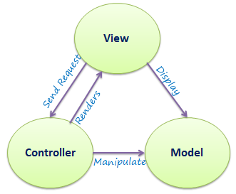
We use UGUI as our View framework, MonoBehaviours as the Controller basis, and we have a centralized Model using UIDATA structs. We are also using Flux C# implementation SharpFlux to manipulate the Model.
Model
If necessary, create a new UI Data Struct and add to UIStateData, UISessionStateData or UIProjectStateData depending on the data usage. In the example, the SceneOptionData would be in the UIStateData.
Note: This is a smaller example with only one Boolean variable. Please see the full code in the existing file.
[Serializable]
public struct SceneOptionData : IEquatable<SceneOptionData>
{
// View Options
public bool enableTexture;
public bool Equals(SceneOptionData other)
{
return enableTexture == other.enableTexture;
}
public override bool Equals(object obj)
{
return obj is SceneOptionData other && Equals(other);
}
public override int GetHashCode()
{
return enableTexture.GetHashCode();
}
public static bool operator ==(SceneOptionData a, SceneOptionData b)
{
return a.Equals(b);
}
public static bool operator !=(SceneOptionData a, SceneOptionData b)
{
return !(a == b);
}
}
Path: Assets/Scripts/Data/SceneOptionData.cs
Add the data to UIStateData which is used in the UIStateManager.cs so we can centralize access to SceneOptionData in the UI callbacks. This will be modified later using Actions.
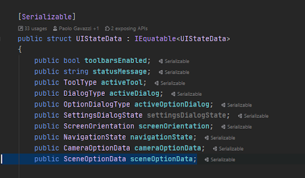
Path: Assets/Scripts/UI/UIStateData.cs
View
We need a Scene Options dialog.
Create Dialog Prefab
Create the prefab and add all the necessary UI controls. You can refer to Scene Options Dialog, Filter Options Dialog, or Camera Options Dialog for ideas. Most widgets are taken from the unity.touch-framework package.
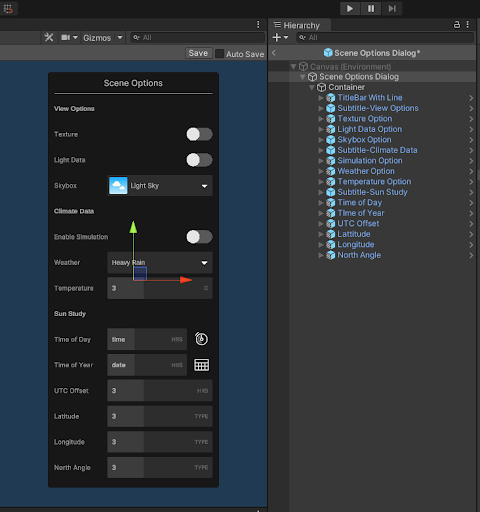
Another way to create a new dialog is to start from another existing dialog: find an existing .prefab file, press ctrl-D (command-D on macOS) to duplicate, and rename the prefab to the desired name.
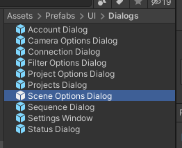
Path: Assets/Prefabs/UI/Dialogs
Controller
Modify an existing ActiveDialogController to support your new dialog.
Add your new DialogType
You need to add a new DialogType here. We like using enums so it is easy to debug later on. This is an extra step, but down the line it will help greatly to debug UI issues.
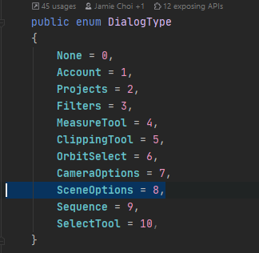
Path: Assets/Scripts/UI/UIStateData.cs
Add Your New Dialog to ActiveDialogController
Open ActiveDialogController.cs and add your new dialog. These are 3 simple steps:
Add a new member for your scene options dialog:
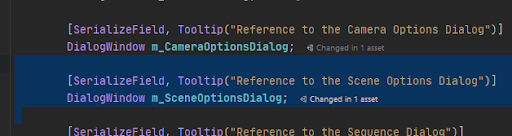
Update the OnStateDataChanged() event handler:
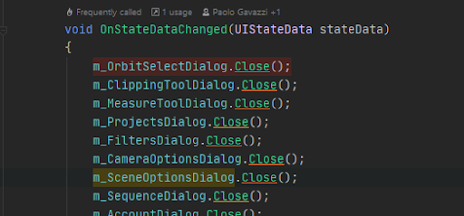
Add your switch case for your DialogType:
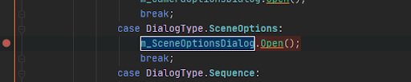
Now you can create the controller class to handle all the changes and data modifications.
Create the SceneOptionsUIController.cs class
Every dialog has a Controller. Controllers are used to respond to UIData changes, and to support UI user events (button presses, sliders, etc.). This is the basic template of the UI controller class. (Don’t forget to add “[RequireComponent(typeof(DialogWindow))]” ). You can duplicate an existing controller and rename it:
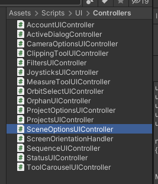
Path: Assets/Scripts/UI/Controllers
Add member controls for the UI with [SerializeField]. Also add local private members like SceneOptionData to cache it and compare if it has changed or not. See the code below OnStateDataChanged():
using System;
using SharpFlux;
using UnityEngine;
using UnityEngine.UI;
namespace Unity.Reflect.Viewer.UI
{
[RequireComponent(typeof(DialogWindow))]
public class SceneOptionsUIController : MonoBehaviour
{
#pragma warning disable 649
[SerializeField]
Button m_DialogButton;
[SerializeField]
SlideToggle m_TextureToggle;
#pragma warning restore 649
DialogWindow m_DialogWindow;
Image m_DialogButtonImage;
SceneOptionData m_CurrentsSceneOptionData;
Add Listener to UI controls in Start(). When the Dialog is destroyed, all sub UI controls are destroyed too, so we don’t need to RemoveListener in OnDestroy().
void Awake()
{
UIStateManager.stateChanged += OnStateDataChanged;
m_DialogButtonImage = m_DialogButton.GetComponent<Image>();
m_DialogWindow = GetComponent<DialogWindow>();
}
void Start()
{
m_DialogButton.onClick.AddListener(OnDialogButtonClicked);
m_TextureToggle.onValueChanged.AddListener(OnTextureToggleChanged);
}
We can compare cached data to check if it's changed or not and only update the UI when it’s changed. Be aware that updated UI code in OnStateDataChanged must not call its own valueChanged callback again.
void OnDialogButtonClicked()
{
var dialogType = m_DialogWindow.open ? DialogType.None : DialogType.SceneOptions;
UIStateManager.current.Dispatcher.Dispatch(Payload<ActionTypes>.From(ActionTypes.OpenDialog, dialogType));
}
void OnTextureToggleChanged(bool on)
{
// this will be added on “Add an Action to Control and Update UI” section.
}
void OnStateDataChanged(UIStateData data)
{
m_DialogButtonImage.enabled = data.activeDialog == DialogType.SceneOptions;
m_DialogButton.interactable = data.toolbarsEnabled;
if (m_CurrentsSceneOptionData == data.sceneOptionData)
return;
if (m_CurrentsSceneOptionData.texture != data.sceneOptionData.texture)
m_TextureToggle.on = data.sceneOptionData.texture;
}
}
}
Path: Assets/Scripts/UI/Controllers/SceneOptionsUIController.cs
At this stage, you can tie everything together.
Add the SceneOptionsUIController Component to the Prefab
Edit the prefab (enter nested prefab edition mode). In the Inspector, add the component:
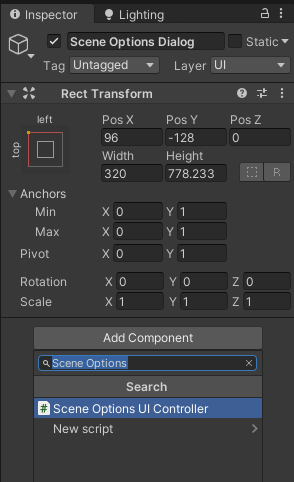
This automatically adds all required components if missing (Canvas, Canvas Group, Graphic Raycaster, and Dialog Window).
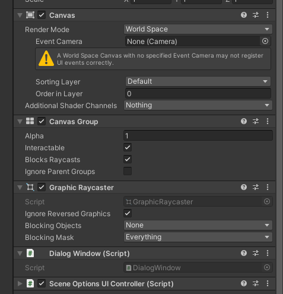
Put your Prefab in the Scene
Place your Options Dialog under UI Main in the Reflect scene next to other dialog prefabs.
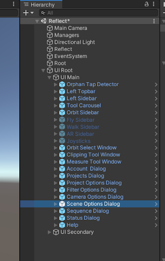
Select “UI Root” GameObject, and there is a “Active Dialog Controller” in the inspector window. Drag and drop the “Scene Options Dialog” to the inspector window to set the value.
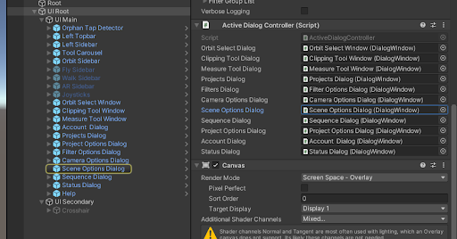
Disable the Canvas component to hide the dialog by default. Visibility is controlled by DialogWindow component and the ActiveDialogController.
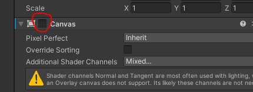
Create the button in the toolbar and link to the dialog
Drag and drop the button item into the SceneOptionsController field for Dialog Button.
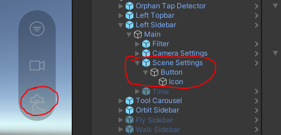
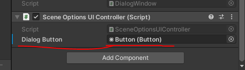
Add an Action to Control and Update UI
Here is an example for the “Texture Toggle” AddListener to the toggle control.
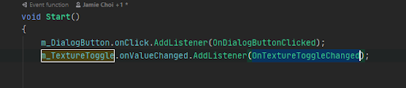
In the callback method, we dispatch with the ActionType and the UI Data (SceneOptionData):
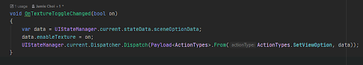
Add new SetViewOption ActionType in the ActionTypes.cs:
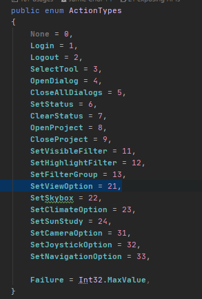
Implement the Action in the UIStateManager.cs.
Go to UIStateManager:OnDispatch(Payload
This is also where you will usually invoke the Pipeline API. 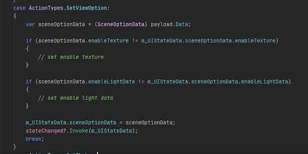 Compile and run. Check to make sure that the new dialog opens when you click the button. If so, keep going to implement the rest of your UI controller. 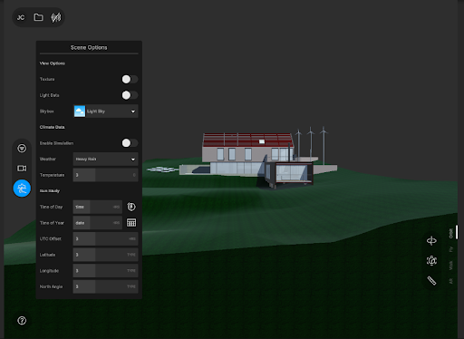 Congratulations, you just added your own custom dialog to the Unity Reflect Viewer!Compile and Run